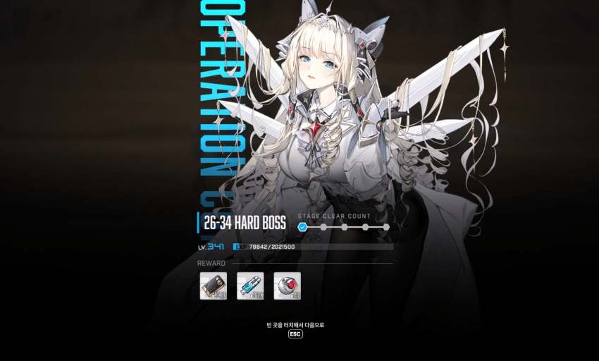
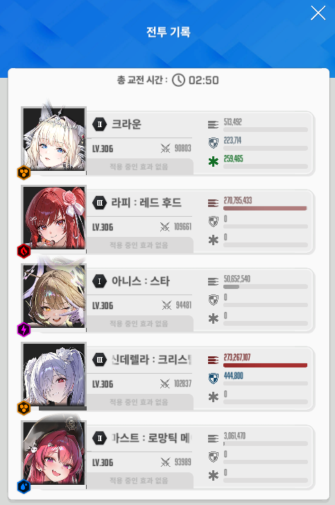
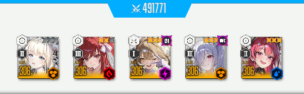
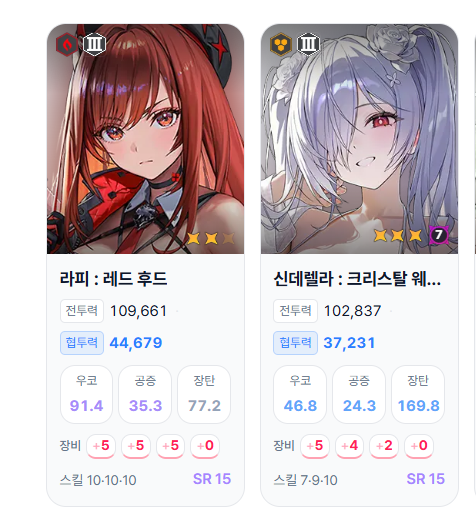
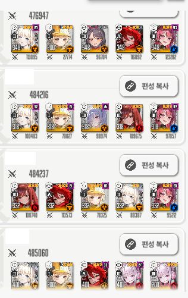
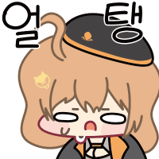
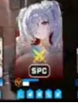

클리어 투력

딜러진 스펙
3.5 뉴비들 중에 아직 스톰브링어에 갇혀있는 사람도 있겠지만
나와 같이 좀 빨리 달린 사람들 20~22지 어딘가에 주차중이거나 이미 깼을거임
사실 십돈통은 이미 102코더단 이고, 앵간하면 울라리에 갇혀있다.
뉴비들이 울라리에 갇혀있는 이유는 무기한 최저를 보면 알 수 있음.

여태까지 1버 아목, 3버 라각렐으로 숭숭 넘어왔는데 갑자기 무기한 최저에 리타랑 레후가 입갤해있는 모습.
무기한 최저에 아니스는 나 포함 2명 밖에 없다.
앨끼랑 바밀크는 뭐냐 대체

레후는 다른 3버로 대체한다 쳐도 제일 문제는 아무래도 리타다.
3.5 뉴비들이 마지막으로 리타를 써본 것은 아무래도 노말 22지 니힐이 마지막일 가능성이 크다.
그것도 본인이 키운게 아닌 200짜리 대여 리타.
울라리 잡자고 리타 스작 하자니 목단, 아니스에 비해 투력이 한참 딸려서
깡오버 해야되나 소장품 넣어야되나 고민하게 만드는 것이다.
그러지 말고 그냥 잘 키워 둔 돌니스 넣고 깨라는 의미에서 참고하라고 글 써봄
참고용 영상
원래는 코어 잘 때리려고 1페에 조준 동기화 끄고 뭐 이것저것 해야하는데
찍을 때 거추장스러워서 그냥 쳤음. 딜 손실 꽤 많이 나니까 클리어 하는 뉴비 입장에서는 비법소스를 꼭 지키자.
울트라 자체는 익숙할거임. 패턴도 그닥 어렵지 않다.
내가 제시하는 택틱의 목표는 수렐루 살리기다.
수렐루의 엄폐물, 체력을 죽지 않을 선에 맞춰서 완주할 때까지 살려야 한다.
또한 이 택틱은 '가급적이면' 수렐루가 공격력이 제일 높아 첫 머신건 타게팅을 가져가야 됨.
안 그러면 수렐루가 저격모드로 변환할 시간을 벌 수가 없어서 딜 손실이 무조건 일어남.
여기서 모순이 생기는데
첫 기관총을 수렐루가 맞게끔 유도하는데 목표는 수렐루가 안 터지게 살리는 것임.
그러다보니 가급적이면 수렐루 장비가 5550이거나 어느정도 돌파가 됐거나
좀 단단한 상태여야 함.
딜러 스펙을 보면 투력은 라피가 높지만 풀코강이라 체,방 자체는 수렐루가 좀 더 높음.
수렐루가 기관총 타게팅을 먹는지는 이 조합 그대로 특특요 울트라 모의전 들어가서 확인해보면 된다.
버스트 순서는 다음과 같은데
이 택틱은 본인 스펙에 따라 버스트가 바뀐다.
크크크 크크메 크크메 크크크 크메
여기서 빨간색 크라운은 수렐루가 안 죽는 체급일 시 메스트를 눌러도 되는 부분임.
크라운을 누르는 이유는 수렐루의 엄폐물을 지키기 위해서임.
기준이 되는 정확한 체력은 알 수 없지만
나같은 경우에는 맨 처음 버스트를 메스트로 시작하면 12버 3스택 메스트 타이밍에 수렐루가 독으로 뒤졌다.

첫 버에 크라운을 쓰면 수렐루가 디코이+엄폐로 따발총을 버티고 흘려 엄폐물이 저정도 남았음.
대충 SPC에서 P보다 아래면 3스택 메스트 한번 버리고 크라운 버스트 써야되고, P보다 한참 오른쪽에 있으면 메크메하면 된다.
택틱 설명
1. 우선 시작하면 아니스 주시해서 2발쏘고 버스트 연타한다. 크라운/메스트 라피
버스트를 누르면서 수렐루를 잡고 재장전을 빠르게 해줌.
곧바로 따발총이 날라오는데, 디코이가 좀 버텨주다가 깨지고 순식간에 빈사상태가 됨.
한발 맞으면 뒤질 피까지 버티다가 개별엄폐 실행. 자연스럽게 저격 모드로 전환한다.
2. 풀버 시간이 끝나기 전에 저지원 2개만 정리해놓고 수렐루 버스트에 맞춰서 저지 실행 크라운 수신데
충격파는 크라운 버스트가 막아주니까 풀딜 넣으면 됨. 충격파 이후에는 크라운을 잡는다.
3. 크라운을 잡고 스택이 17에서 18로 넘어가기 직전에 사격을 멈춰 스택을 조절한다. 크라운/메스트 라피
17도 아니고 18도 아닌 17.5~9여야함. 늦거나 빠르면 두번째 기관총을 도발할 수 없음. 제일 중요한 포인트다.
독 뿌리기는 전체 엄폐하고, 독 끝나면 엄폐 풀고 딜 넣는다 크라운 수신데
4. 마찬가지로 풀버 시간이 끝나기 전에 저지원 2개만 정리해놓음 크라운 라피
여기서 최대한 늦저지를 하는데 저지할 시점에 크라운 도발 스택이 16 이상이어야 함.
스택이 모자라거나 저지를 빨리하면 기관총에 딜러가 맞아죽어서 리트다.
이전 풀버 끝나기 전에 크라운을 재장전 해놓는게 편할거임.
이 이후로는 도발컨 안 해도 되니까 라피만 잡는다. 코어 최대한 노리자.
5. 쭉 패다가 풀버 끝나기 전에만 저지를 완수하면 됨. 메스트 수신데
메스트 3스택 수렐루로 파츠를 못 먹는게 아쉽다.
6. 충격파 타이밍. 코어 열심히 패자. 크라운 라피
7. 전체 독 타이밍인데, 니힐리스타 전체기처럼 독 첫타는 크라운 보호막으로 막아지니까
크라운 버스트로 한 틱 버티고 엄폐하자. 사소하지만 딜을 최대한 땅기는 포인트다. 크라운 수신데
8. 여기까지 버스트 밀릴 포인트가 딱히 없으니 암전 저지하면서 라피 죽창이 들어간다. 메스트 라피
첫 저지는 빠르게 해주고, 두번째 저지는 최대한 늦게 한다.
9. 저지를 늦게 했으면 울라리가 독 날려보내기 전에 수신데 버스트가 들어간다. 크라운 수신데
딜 부족하거나 저지를 빨리 하면 독이 날아올텐데 이건 개별엄폐 해줘야 함.
그 후에는 또다시 충격파. 크라운 라피
10. 여기가 가장 중요한 분기점이다.
이쯤 왔으면 수렐루 엄폐물이 걸레짝이 되어있을거임.
눈대중으로 계산 떄려봤을 때 수렐루의 엄폐물이 독을 버틸지 말지 스스로 판단하면 됨. 크라운/메스트 수신데
여기서 메-렐을 했는데 버텼다면 메스트 3스택 수렐루 버스트에 독주머니가 100% 뜯겨나가면서 독 날리기 패턴도 스킵되고 딜도 확실히 집어넣을 수 있음.
패턴이 스킵된 울라리가 샌드백 마냥 가만히 있을테니 코어 열심히 패자 크라운 라피
11. 패다보면 암전저지를 다시 하는데 마찬가지로 첫 저지는 빠르게하고, 풀버 끝나기 전에 두번째 저지를 한다.
비틀대는 울라리가 독주머니를 재생성하기 때문에 마지막 수신데 파츠댐을 집어넣을 수 있음 메스트 수신데
남은 12초동안 패서 독주머니 뜯고 딜 욱여넣었는데 안 죽으면 딜부족이다. 자라.
피통 얼마 안 남았으면 크리리트 필요
열심히 썼는데 개추좀